Alpha software, not for production data. Bugs can cause data loss, formats may change without migration, and the cryptography has not been independently audited. Keep your own backups and check that you can restore from them.
Captured automatically from version 0.0.1-alpha.6. Every build on GitHub Actions takes these pictures again on fresh machines (Linux, Windows, macOS, the Android emulator and the iOS Simulator), with an invented demo vault: a laptop with two folders and a phone that holds the photo folder in selective mode. The desktop interface is the same page on Linux, macOS and Windows: it is served by the background service and rendered by your browser, so only the window frame differs. The tray and menu-bar icons are the only native parts.
Desktop interface
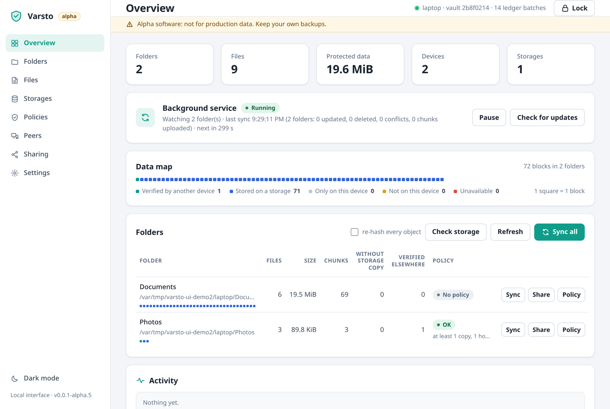
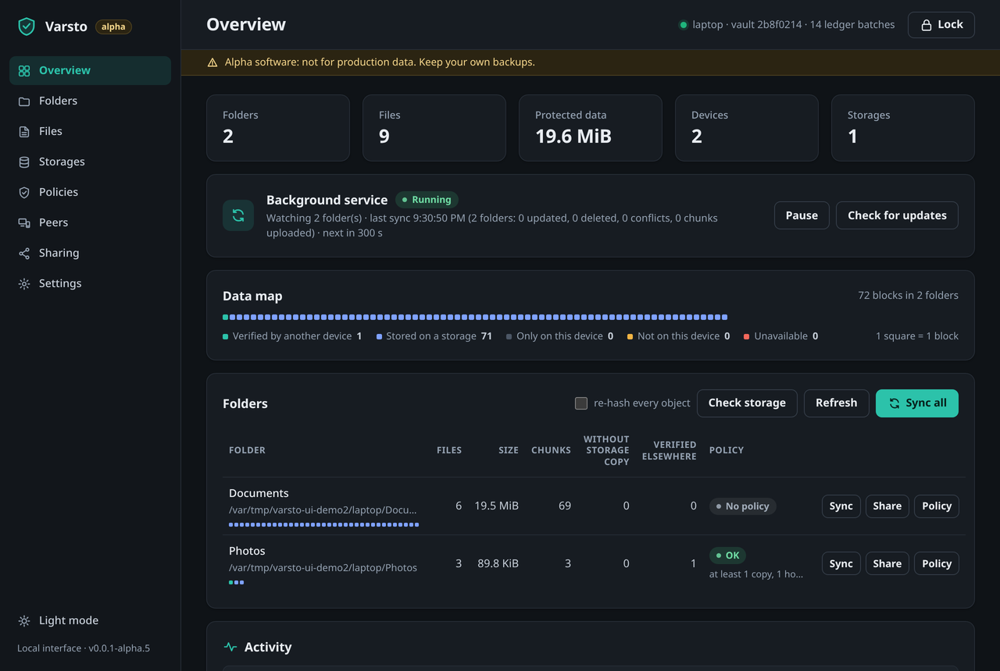
Overview on the laptop: the background service is running and watching two folders; each folder shows how many chunks lack a storage copy and how many copies another device has verified. The picture follows the site theme: light or dark.
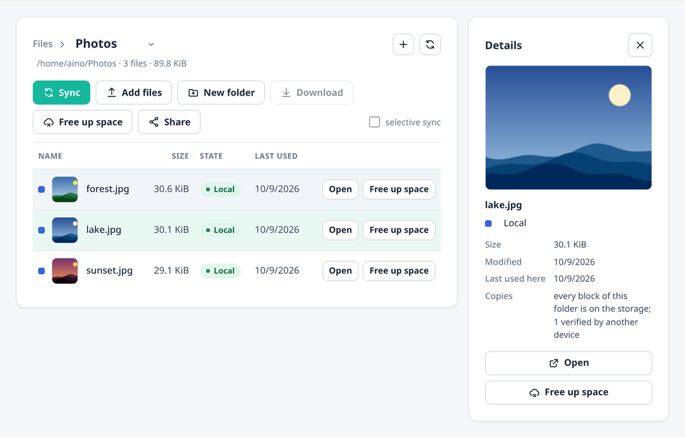
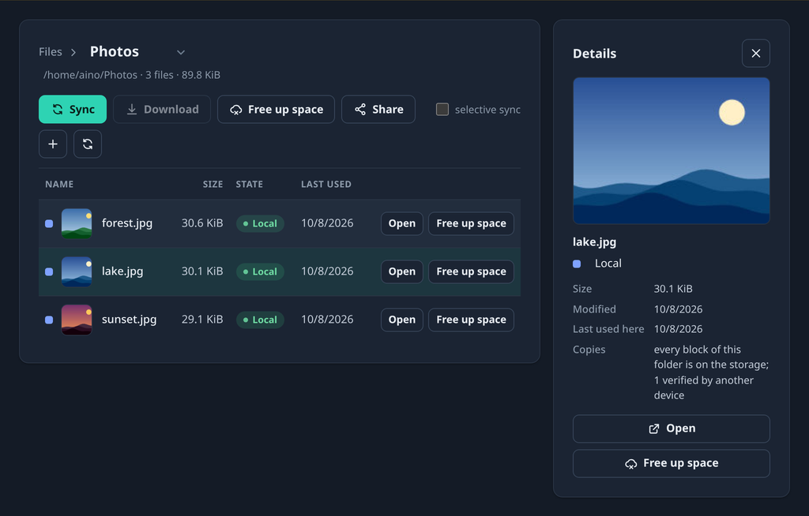
The phone's view of the photo folder in selective mode: two files are placeholders, one has been fetched. The thumbnails were generated on the laptop, stored encrypted and decrypted here with the folder key; the phone never downloaded the pictures themselves.The Organization page on an administrator's laptop: people and their devices, a form that approves a new device after the six-word fingerprint is compared with the person, what members may do on their own, and the log every administrator device signs. The page exists only for a vault that has an organization.
Phone interface
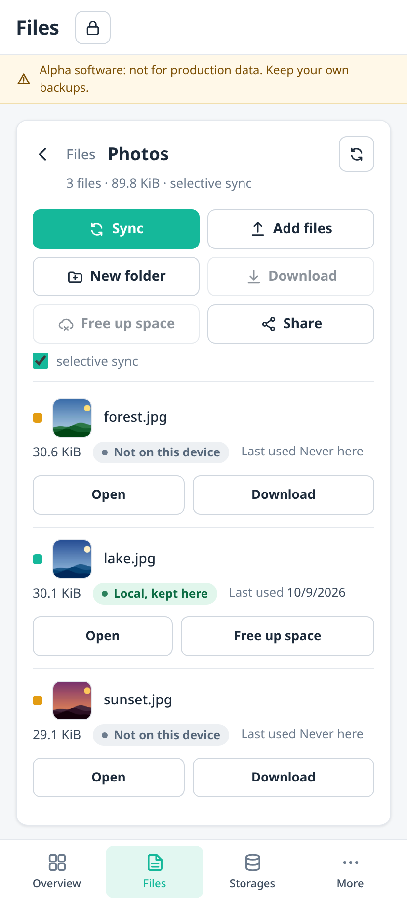
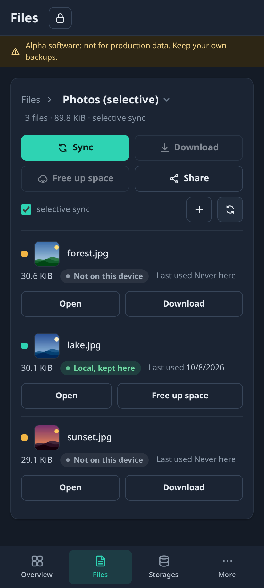
The same interface in its phone mode: tables become cards, the sidebar becomes a bottom tab bar, and a folder is added by name alone; the device chooses where it lives, so no directory is ever typed.
macOS app
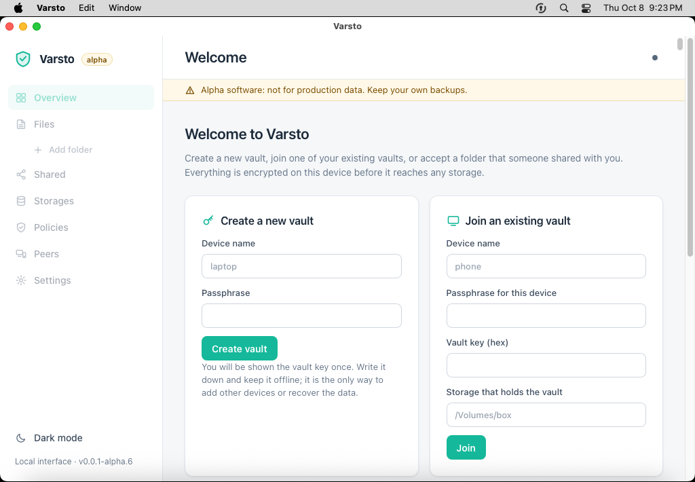
The native app on macOS, installed from the disk image and launched by the build pipeline on an Apple Silicon runner, with a demo vault prepared for the Finder test. The app also has an application menu and a menu-bar item; the Rust service and the command line travel inside the bundle.
Linux
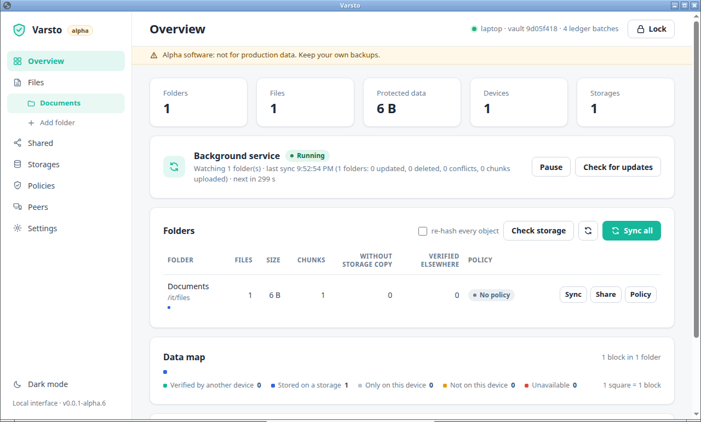
The interface in its own window on Ubuntu 24.04 (Xfce), opened by the tray app in the browser's app mode, captured by the build pipeline on a GitHub Actions runner.
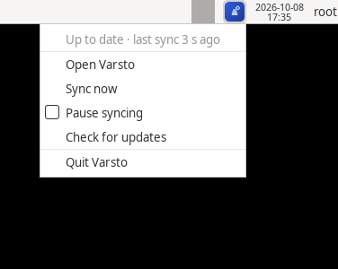
The tray icon and its menu on the Xfce panel of the same machine, captured by the build pipeline; the service was watching a demo folder.
Windows
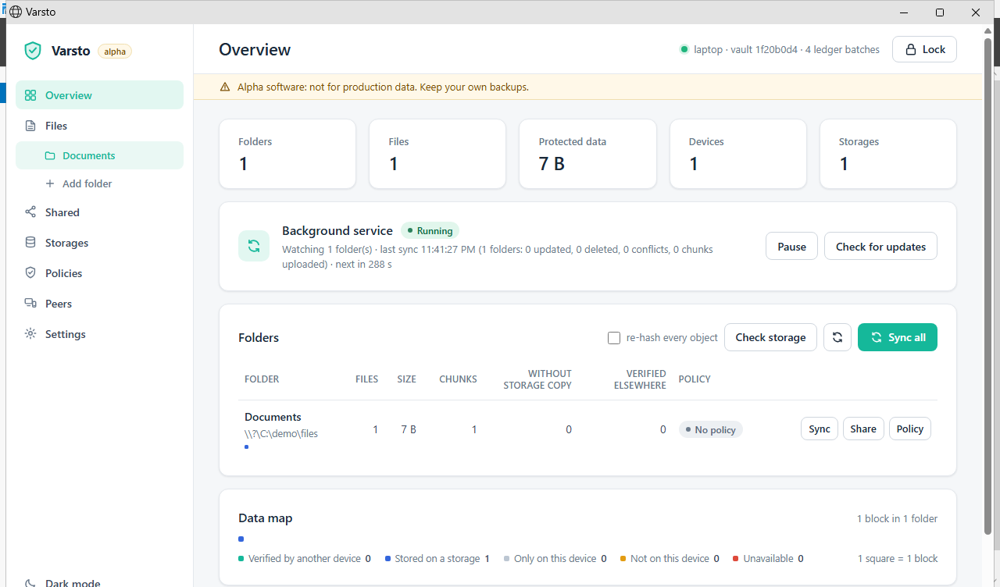
The interface in its own window on Windows Server 2025, opened by the tray app in Edge's app mode (no tabs, no address bar), captured by the build pipeline on a GitHub Actions runner.
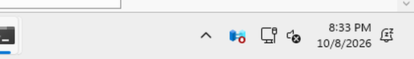
The tray icon on the same machine, captured by the build pipeline after it installed the Windows package, created a demo vault and started the tray app. The menu capture follows.
Android
The sideloadable debug APK of 0.0.1-alpha.6, built on a short-lived cloud machine and run in an Android 15 emulator. The foreground service runs the same core as the desktop; the app shows the phone interface in a WebView.
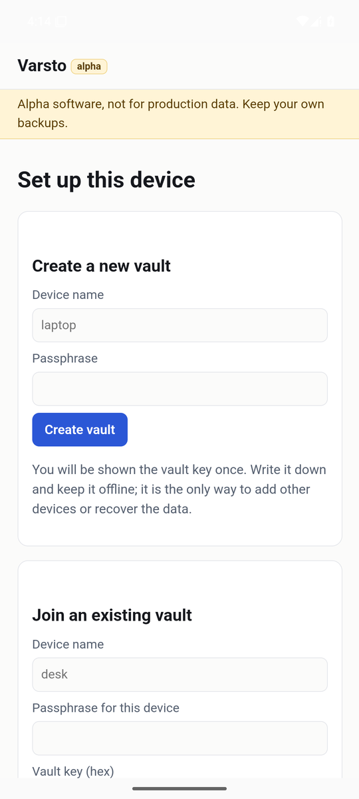
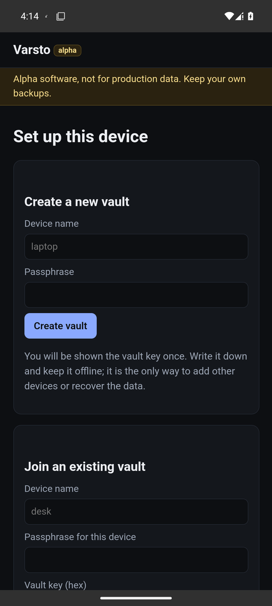
First start: create a vault here or join one with the vault key from another device.
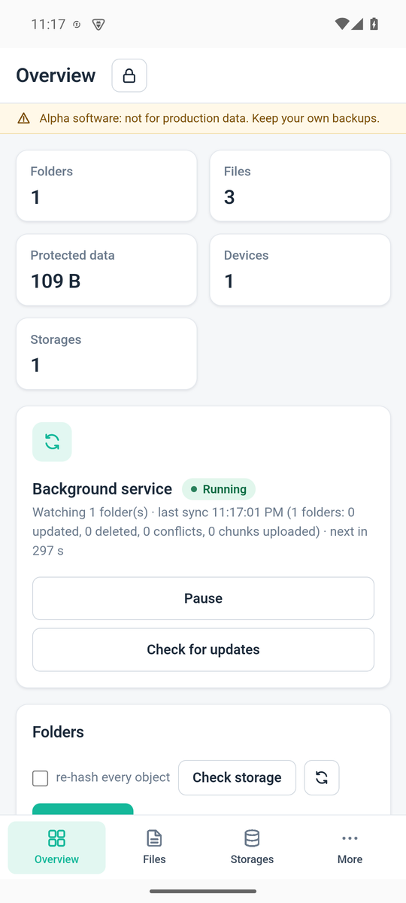
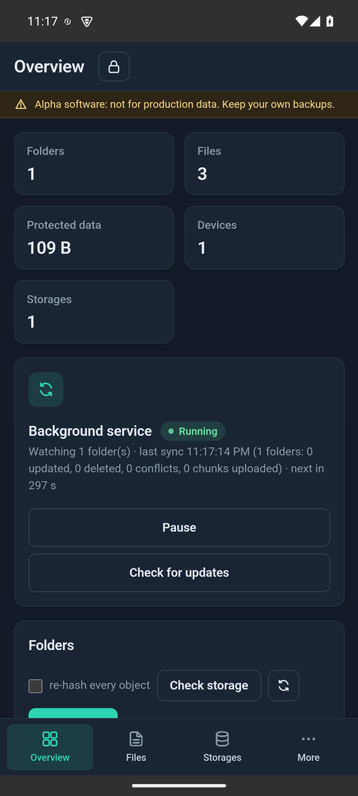
Overview after the first folder: the service runs inside the app and syncs on its own schedule.
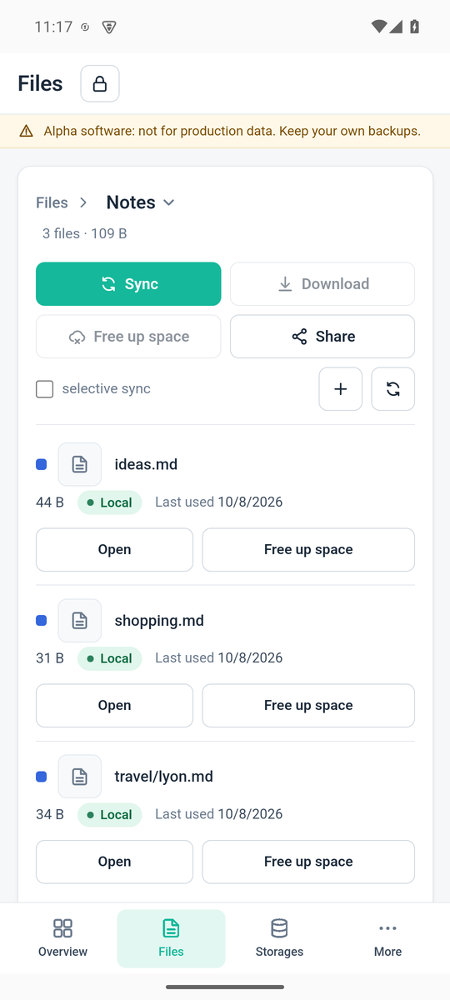
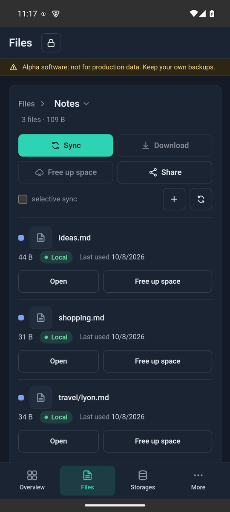
Files on the phone: a folder is added by name alone and lives under the app's own storage.
iOS
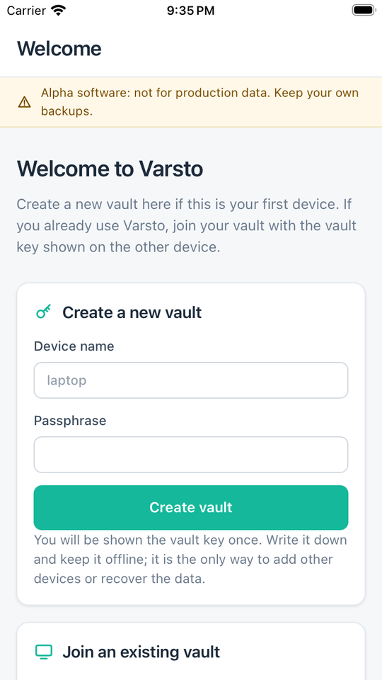
The iOS shell in the Simulator, built and launched by the build pipeline on an Apple Silicon runner: the Rust core runs inside the app process and the interface is the same page in a WebKit view. Not yet run on a real iPhone or iPad.
Not captured yet
Real phones and tablets. Android and iOS have been run in the emulator and the Simulator only; captures from real devices follow once the apps reach the store test tracks.
The screenshots are from a demo vault with invented files. Paths and names on this page are not real data.